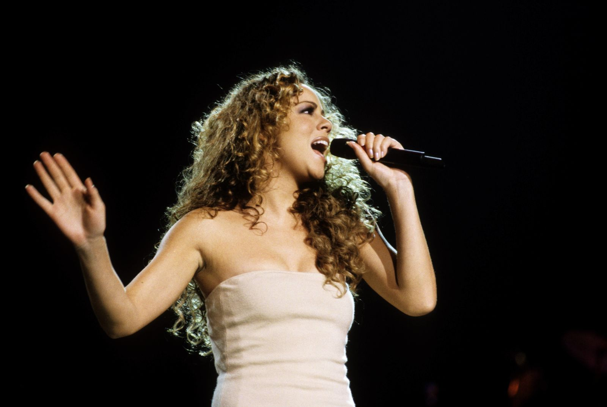
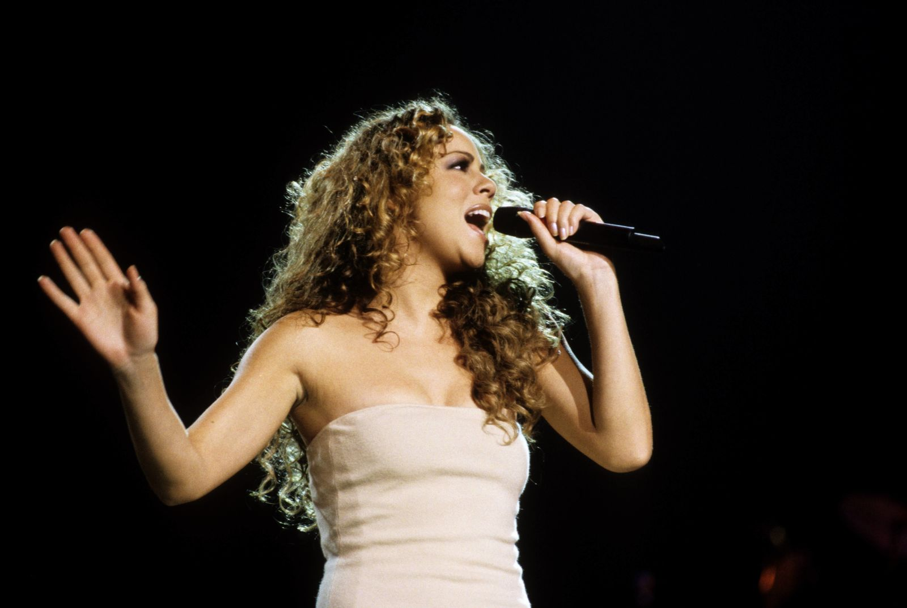

Mariah Carey: The Soulful Symphony
Mariah Carey, an iconic American singer, songwriter, and producer, has captured the hearts of millions with her extraordinary talent and powerful voice. Born on March 27, 1969, in Huntington, New York, Carey rose to fame in the early 1990s and quickly became one of the best-selling female artists in the music industry.
Known for her incredible vocal range and melodic style, Carey has created numerous chart-topping hits, including "Hero," "We Belong Together," and "Fantasy." Her music seamlessly blends pop, R&B, and soul, captivating listeners of all ages. Carey's influence extends beyond her music; she is also recognized for her philanthropic work, supporting various causes and charities.
Throughout her career, Mariah Carey has received numerous awards, including Grammy Awards, Billboard Music Awards, and American Music Awards, showcasing her immense talent and widespread recognition. With her timeless songs and unmatched vocal abilities, Carey continues to inspire music lovers around the world, leaving an indelible mark on the music industry. Her dedication to her craft and her ability to connect with audiences make her a beloved artist for generations to come.
 
